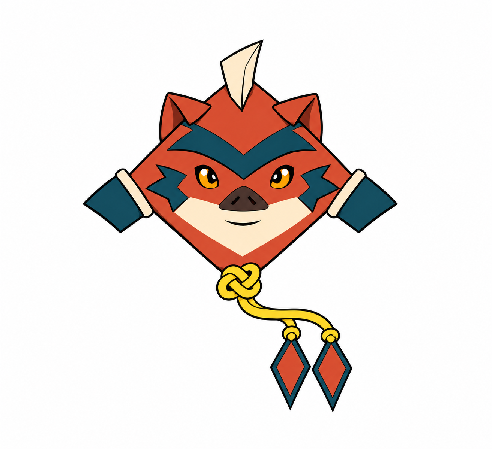
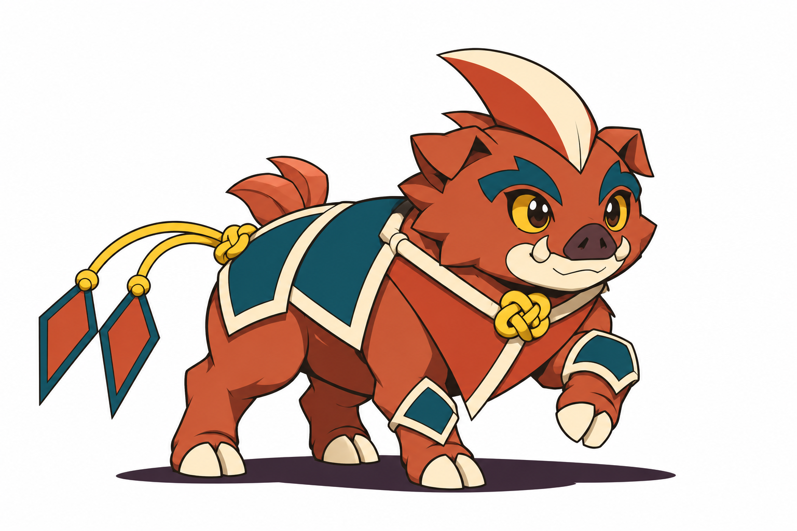
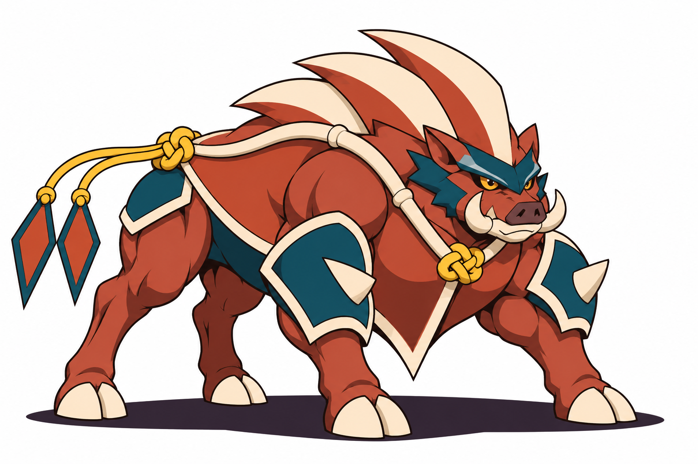
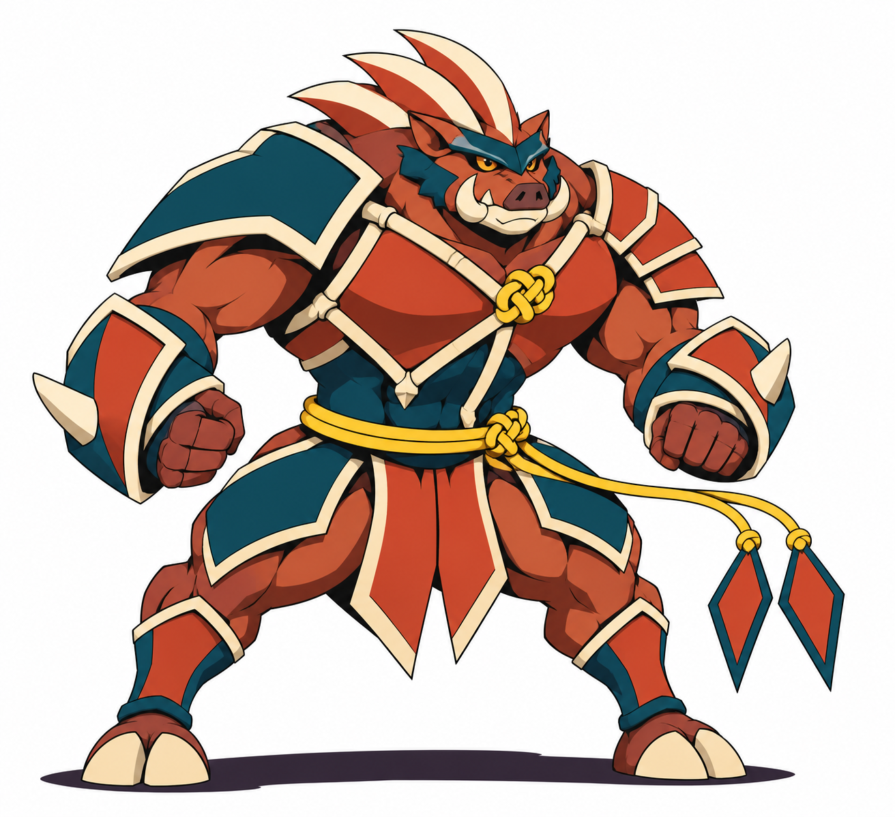

Bebê

Aprende a orientar as pequenas abas de proteção do rosto.
BriefQuatro designs visuais aprovados; regras propostas.

Aprende a orientar as pequenas abas de proteção do rosto.
Brief
Explora o chão sobre quatro patas e aprende a firmar os cascos.
Brief
Concentra força nos ombros e usa as proteções dianteiras para conter impactos.
Brief
A postura bípede libera as proteções dianteiras para aparar e contra-atacar.
Brief